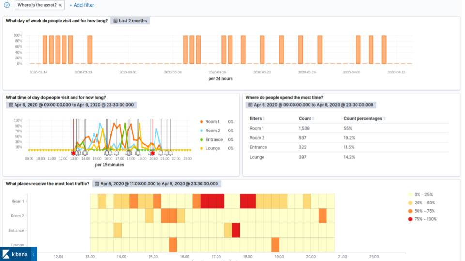

Asset Tracking
Locate assets and equipment in real-time and/or analyse their movements through physical spaces.
Why track assets?
Asset availability drives operational efficiency
- Objectively measure usage patterns to gain actionable insights
- Identify when and where to improve processes
- Optimise productivity and inventory (and hence the bottom line!)
What's measured?
Asset journeys on any meaningful timescale

Access and manipulate data with ease through standard web platforms* to:
- Observe asset location and behaviour over time
- Compare the performance of spaces against target metrics
- Focus on what matters to you (your data is your business!)
* Kibana dashboard shown here
How does this work?
Assets are identified and located by an affixed beacon
- Plug-and-play infrastructure is deployed
- A third-party Bluetooth Low Energy beacon is affixed to each asset
- Pareto Anywhere open source software processes and relays the real-time data stream
- Real-time asset location is accessible through Pareto Anywhere web apps and APIs
- Data is stored in Elasticsearch* or any other database
- Data is analysed in Kibana* or any other analytics software
* Pareto Anywhere the open source Elastic Stack

Success Stories
From those who use Pareto Anywhere for asset tracking
We now know in real-time where our equipment is, from the warehouse to the truck to the drop at the job site.
Extend the power of the web to physical applications
Learn more about the complementary use cases. Get Owl-Equipped to enable any and all in your space.